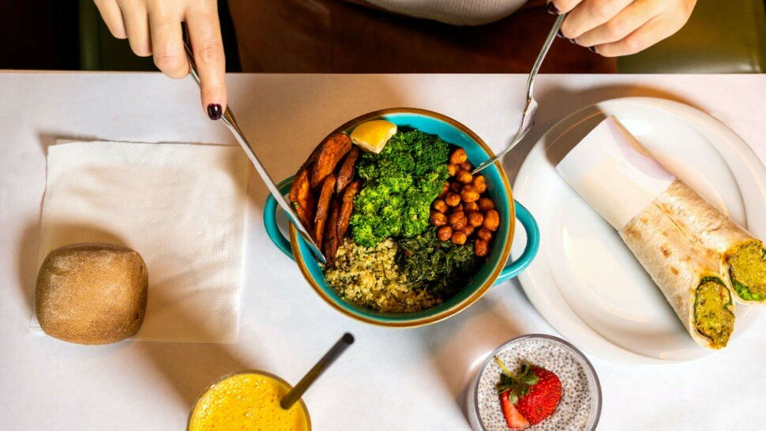

L'impact du contrôle des portions et de la qualité des aliments sur la gestion de l'obésité

L'obésité est devenue un problème de santé publique majeur qui affecte des millions de personnes à travers le monde, et son incidence ne cesse d'augmenter [1].
Selon l'Organisation mondiale de la santé (OMS), l'obésité a presque triplé depuis 1975 et a touché plus de 650 millions d'adultes en 2016 [2].
La gestion de l'obésité est cruciale pour prévenir et traiter les maladies chroniques liées à l'obésité, telles que le diabète de type 2, les maladies cardiovasculaires et certains types de cancer [3]. Cet article vise à analyser l'impact du contrôle des portions et de la qualité des aliments sur la gestion de l'obésité en se basant sur des données probantes issues de la littérature scientifique.
Le contrôle des portions est une stratégie clé pour prévenir et gérer l'obésité. Il s'agit d'ajuster la taille des portions consommées pour éviter de trop manger et de consommer des calories en excès [4]. Plusieurs études ont montré que la taille des portions influence la consommation calorique et que la réduction des portions peut aider à perdre du poids et à maintenir un poids santé [4,5].
La qualité des aliments joue également un rôle crucial dans la gestion de l'obésité. Une alimentation saine et équilibrée, composée principalement de fruits, légumes, protéines maigres et aliments peu transformés, peut contribuer à la perte de poids et au maintien d'un poids santé [6]. De plus, une meilleure qualité des aliments est associée à une réduction du risque de maladies chroniques et à une amélioration de la santé globale [3].
L'association du contrôle des portions et de la qualité des aliments peut offrir une approche synergique pour la gestion de l'obésité. En combinant ces deux stratégies, les individus peuvent adopter des habitudes alimentaires saines et durables qui favorisent la perte de poids et la prévention des maladies liées à l'obésité [5]. Cependant, la mise en œuvre de ces stratégies rencontre des défis, notamment les facteurs culturels, sociaux et économiques qui influencent les choix alimentaires et l'accès aux aliments sains [6].
Dans cet article, nous discuterons en détail l'impact du contrôle des portions et de la qualité des aliments sur la gestion de l'obésité, en mettant l'accent sur les stratégies efficaces, les obstacles à leur mise en œuvre et les perspectives pour l'avenir. Nous examinerons également le rôle des professionnels de la santé, des nutritionnistes et des décideurs politiques dans la promotion d'une alimentation saine et équilibrée.

Sommaire
- Contrôle des portions
- Stratégies pour contrôler les portions
- Études et recherches sur l'efficacité du contrôle des portions dans la gestion de l'obésité
- Qualité des aliments
- Stratégies pour améliorer la qualité des aliments
- Études et recherches sur l'efficacité de la qualité des aliments dans la gestion de l'obésité
- Combinaison du contrôle des portions et de la qualité des aliments
- Exemples de programmes et d'études intégrant les deux approches
- Études sur la combinaison des approches
- Défis et perspectives
- Perspectives et solutions potentielles
- Recherche et développement futurs
- Conclusion
- Sources
Contrôle des portions

- Définition et importance du contrôle des portions
Le contrôle des portions est une approche alimentaire qui consiste à ajuster la taille des portions consommées afin de réduire la consommation calorique et de favoriser un équilibre énergétique optimal pour un poids santé [1].
Il est essentiel de contrôler les portions pour éviter la surconsommation d'aliments, qui peut entraîner un gain de poids et augmenter le risque d'obésité [7].
- Relation entre la taille des portions et la consommation calorique
Plusieurs études ont démontré que la taille des portions influence directement la consommation calorique et le poids corporel [8,9]. L'augmentation des portions au cours des dernières décennies a contribué à la hausse des taux d'obésité [7].
En effet, des recherches ont montré que les individus ont tendance à manger plus lorsque les portions sont plus grandes, même si cela dépasse leurs besoins énergétiques [8].
À l'inverse, la réduction des portions peut aider à diminuer la consommation calorique et à favoriser la perte de poids [9].
Stratégies pour contrôler les portions
Études et recherches sur l'efficacité du contrôle des portions dans la gestion de l'obésité
Qualité des aliments
Stratégies pour améliorer la qualité des aliments
Études et recherches sur l'efficacité de la qualité des aliments dans la gestion de l'obésité
Combinaison du contrôle des portions et de la qualité des aliments

- Importance de combiner les deux approches
Comme mentionné précédemment, le contrôle des portions et la qualité des aliments sont deux facteurs clés dans la gestion de l'obésité.
Toutefois, il est crucial de combiner ces deux approches pour maximiser les effets sur la perte de poids et la prévention des maladies chroniques associées à l'obésité [23].
En effet, en se concentrant uniquement sur l'un des deux aspects, on pourrait négliger des éléments importants qui pourraient entraver la réussite de la gestion du poids.
Avantages de la combinaison des approches
- Effet synergique
La combinaison du contrôle des portions et de la qualité des aliments peut produire un effet synergique, renforçant ainsi l'impact de chacune des approches sur la perte de poids et la prévention de l'obésité [24].
Par exemple, la réduction des portions peut aider à diminuer l'apport calorique, tandis que la consommation d'aliments de haute qualité peut favoriser la satiété et réduire les fringales, facilitant ainsi le maintien d'un apport calorique plus faible sur le long terme [25].
- Amélioration de la santé globale
En combinant le contrôle des portions et la qualité des aliments, il est possible d'améliorer la santé globale et de réduire le risque de maladies chroniques, telles que les maladies cardiovasculaires, le diabète de type 2 et certains types de cancer [26].
Les aliments de haute qualité fournissent des nutriments essentiels, tels que les vitamines, les minéraux et les fibres, qui sont indispensables au bon fonctionnement de l'organisme et à la prévention des maladies [27].
Exemples de programmes et d'études intégrant les deux approches
Études sur la combinaison des approches
Défis et perspectives
Perspectives et solutions potentielles
Recherche et développement futurs
Conclusion
Sources
- Afshin, A., Forouzanfar, M. H., Reitsma, M. B., Sur, P., Estep, K., Lee, A., ... & Murray, C. J. (2017). Health effects of overweight and obesity in 195 countries over 25 years. New England Journal of Medicine, 377(1), 13-27
- World Health Organization. (2018).
- Ledikwe, J. H., Ello-Martin, J. A., & Rolls, B. J. (2005). Portion sizes and the obesity epidemic. Journal of Nutrition, 135(4), 905-909.
- Rolls, B. J., Morris, E. L., & Roe, L. S. (2002). Portion size of food affects energy intake in normal-weight and overweight men and women. American Journal of Clinical Nutrition, 76(6), 1207-1213.
- Young, L. R., & Nestle, M. (2002). The contribution of expanding portion sizes to the US obesity epidemic. American Journal of Public Health, 92(2), 246-249.
- Van Ittersum, K., & Wansink, B. (2012). Plate size and color suggestibility: The Delboeuf Illusion's bias on serving and eating behavior. Journal of Consumer Research, 39(2), 215-228.
- Andrade, A. M., Greene, G. W., & Melanson, K. J. (2008). Eating slowly led to decreases in energy intake within meals in healthy women. Journal of the American Dietetic Association, 108(7), 1186-1191.
- Wing, R. R., & Phelan, S. (2005). Long-term weight loss maintenance. American Journal of Clinical Nutrition, 82(1), 222S-225S.
- Rolls, B. J., Roe, L. S., Kral, T. V., Meengs, J. S., & Wall, D. E. (2004). Increasing the portion size of a packaged snack increases energy intake in men and women. Appetite, 42(1), 63-69.
- Zlatevska, N., Dubelaar, C., & Holden, S. S. (2014). Sizing up the effect of portion size on consumption: A meta-analytic review. Journal of Marketing, 78(3), 140-154.
- Mozaffarian, D. (2016). Dietary and policy priorities for cardiovascular disease, diabetes, and obesity: A comprehensive review. Circulation, 133(2), 187-225.
- Dietary Guidelines Advisory Committee. (2020). Scientific Report of the 2020 Dietary Guidelines Advisory Committee: Advisory Report to the Secretary of Agriculture and the Secretary of Health and Human Services. U.S. Department of Agriculture, Agricultural Research Service, Washington, DC.
- Monteiro, C. A., Moubarac, J. C., Cannon, G., Ng, S. W., & Popkin, B. (2013). Ultra-processed products are becoming dominant in the global food system. Obesity Reviews, 14(S2), 21-28.
- Fiolet, T., Srour, B., Sellem, L., Kesse-Guyot, E., Allès, B., Méjean, C., ... & Hercberg, S. (2018). Consumption of ultra-processed foods and cancer risk: results from NutriNet-Santé prospective cohort. The BMJ, 360, k322.
- Lichtenstein, A. H., & Ludwig, D. S. (2010). Bring back home economics education. JAMA, 303(18), 1857-1858.
- World Health Organization. (2003). Diet, nutrition, and the prevention of chronic diseases: report of a joint WHO/FAO expert consultation. World Health Organization.
- Martínez-González, M. Á., García-Arellano, A., Toledo, E., Salas-Salvadó, J., Buil-Cosiales, P., Corella, D., ... & Fiol, M. (2012). A 14-item Mediterranean diet assessment tool and obesity indexes among high-risk subjects
- Rolls, B. J. (2014). What is the role of portion control in weight management? International Journal of Obesity, 38(S1), S1-S8.
- Ledikwe, J. H., Rolls, B. J., & Smiciklas-Wright, H. (2007). Portion sizes and the obesity epidemic. The Journal of Nutrition, 137(4), 1076-1080.
- Kant, A. K., & Graubard, B. I. (2018). Energy density of diets in the US 2003-2012: Impact of the food choices and the portion sizes on the obesity epidemic. Nutrients, 10(2), 199.
- Hu, F. B. (2008). Diet and lifestyle influences on risk of coronary heart disease. Current Atherosclerosis Reports, 10(6), 536-544.
- Slavin, J. L., & Lloyd, B. (2012). Health benefits of fruits and vegetables. Advances in Nutrition, 3(4), 506-516.
- Fisberg, M., Kovalskys, I., Gómez, G., Rigotti, A., Sanabria, L. Y. C., García, M. C. Y., ... & Zimberg, I. Z. (2016). Energy intake from beverages is increasing among Mexican adolescents and adults. Nutrients, 8(12), 810.
- Sacks, F. M., Svetkey, L. P., Vollmer, W. M., Appel, L. J., Bray, G. A., Harsha, D., ... & Karanja, N. (2001). Effects on blood pressure of reduced dietary sodium and the Dietary Approaches to Stop Hypertension (DASH) diet. New England Journal of Medicine, 344(1), 3-10.
- Ello-Martin, J. A., Roe, L. S., Ledikwe, J. H., Beach, A. M., & Rolls, B. J. (2007). Dietary energy density in the treatment of obesity: a year-long trial comparing 2 weight-loss diets. The American Journal of Clinical Nutrition, 85(6), 1465-1477.